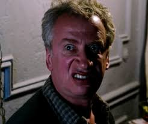

Mr. Ditkovich
By: Daniel Woytowich
Catchphrase: "Rent?"
Who is he?

Mr. Ditkovich is 50 years old and is Ukranian. He is Peter Parker's landlord and is the father of Ursula Ditkovich. He owns a small apartment complex in New York City. Mr. Ditkovich has appeared in all 17 of the Toby Maguire Spiderman films as well as the spin-off anime and manga. Though his most popular appearance was in the Spiderman manga, where he killed both "Venom" and "The Green Goblin". The anime was fairly accurate when it cam to Ditkovich's fighting ability, but it forgot to include his Thanos-like ability to warp time, reality, and allows him to turn enemies into piles of 100$ bills, at the cost of most of his energy.